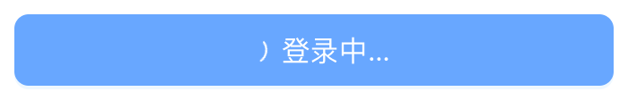
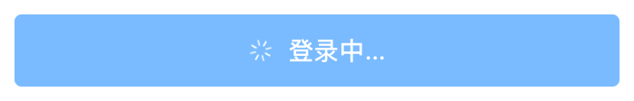
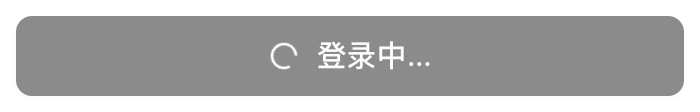
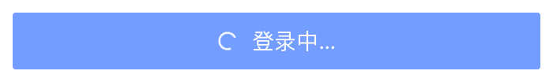
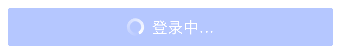

02-3
视觉层：统一图标
五个组件库各带一套图标，怎么换成同一套？本篇讲语义图标，以及套件怎么把五个库的图标换上去。
01第一部分
语义图标：页面只声明需要哪个图标
1五套图标
控件内置图标：五个组件库各有一套
下拉箭头、眼睛、对勾、加载圈，都是组件库自己画的，只设主题换不了。
五个组件库 登录框 · 组件库原生 · 黑白真组件
Ant Design

Element Plus

shadcn/ui

Arco Design

TDesign

Ant Design、Element Plus、TDesign 的图标是单独的包，Arco 的图标随组件库一起发，shadcn/ui 自己不带、源码里用 lucide-react（五个套件档案的 icons 一项）
2
页面声明图标名称，图标集由规范决定
3
语义图标与两套图标集
4
切换图标集，五个组件库同步更新
02
套件如何替换图标
5
套件替换图标的三种方式
6
复选框对勾由 CSS 绘制
7
五个组件库的图标插槽与官方命名
8
密码框显隐图标：五个组件库各不相同
9
图标部分与官方文档的对照
第 02-3 集 · 完整视频
后面 8 节在课程里
这一篇后面的 8 节和第 02-3 集完整视频，在「给设计师的零基础 AI 课」里。
完整版文字版还有每段代码的逐行解释和四个附录（组件库档案、适配记录、取舍记录、常用提示词），可以下载到本地看。

想让 AI 帮你查一查，就这样跟它说
打开 mihua-blocks-open 里五个套件的组件库档案，用一张表告诉我：主色和控件高度，在每个组件库里是它自己算、要套件一个个填，还是写死了。只看，不要改文件，也不用跑检查。